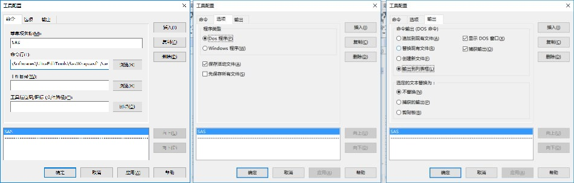
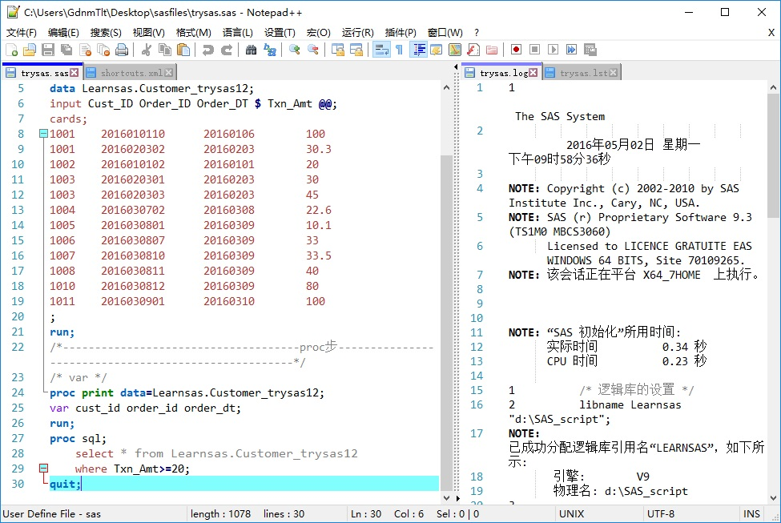
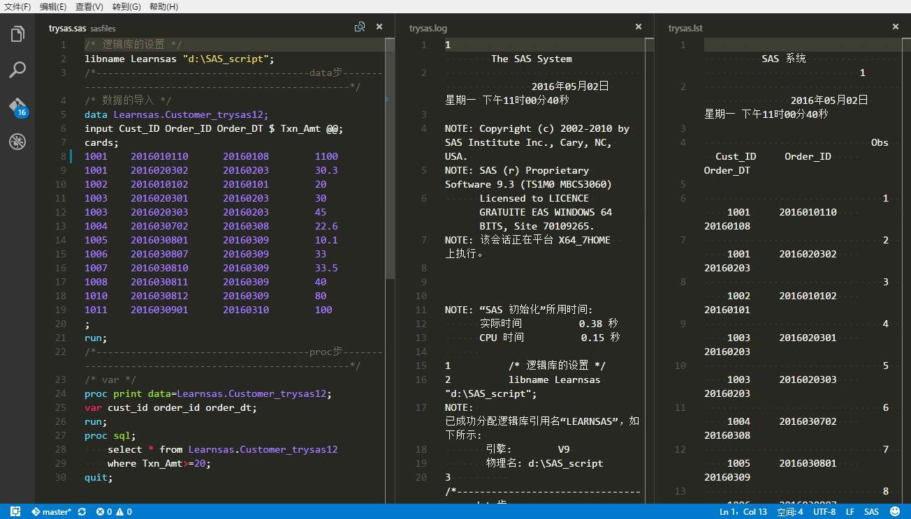
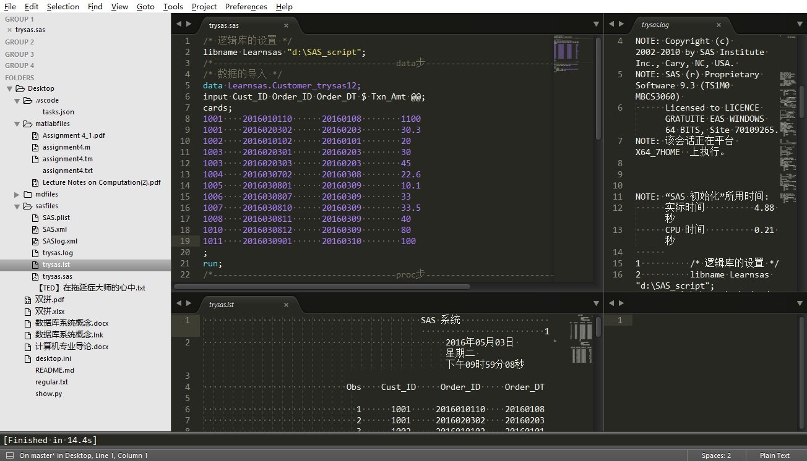

由于以前已经提到过的原因，我打算在编辑器里面配置SAS，这样不用每次打开SAS软件了，并且我也找到了一种方法，就是使用UltraEdit配置用户工具。后来接触了VSCode、Sublime、Notepad++的一些功能，发现上述方法并不局限于UltraEdit，这些编辑器都可以启动外接程序。虽然方法大同小异，但是还是有一些小小的区别，下面我来总结一个。
前面已经提到，可以编写VB代码然后保存为.wsf文件，然后在UltraEdit中调用这个文件来运行SAS；也可以直接把调用语句输入UltraEdit 高级 > 用户工具 > 配置工具 的命令行。在UltraEdit的官网上有相关说明，其中给出了SAS社区Wiki上的一个做法。这个就是我之前在博客里提到的方法。
.wsf文件调用SAS可以在这个链接查看.wsf文件的全部代码，或者点击这里直接下载该文件。
将下载下来的SasWrap.wsf放在合适的位置，比如C:\Users\用户名\Downloads\SasWrap.wsf。打开UltraEdit，高级 > 用户工具 > 配置工具，你需要在菜单项名称里面起一个名字，比如“SAS”，然后在命令行里输入
"C:\Users\用户名\Downloads\SasWrap.wsf" /sasprog:"%f"
这表示运行C:\Users\用户名\Downloads\SasWrap.wsf，并将"%f"作为参数传递给sasprog这个变量。在UltraEdit中%f给出你正在操作的当前文件的完整路径，而sasprog则是SasWrap.wsf中的一个变量，用来储存文件名。下面给出了选项示例：

从SasWrap.wsf的文件源码中，我们不难发现，该文件实际上调用WshShell运行了一条语句
RunLine = DQ & SASExe & DQ _
& " -sysin " & DQ & SASProg & DQ _
& " -log " & DQ & LogFile & DQ _
& " -print " & DQ & ListFile & DQ _
& " -nologo " _
& " -noovp " _
& " -rsasuser " _
& " -unbuflog"
WinShell.Run(RunLine, SHOWMINIMIZED, True)
实际上就是SASExe -sysin SASProg -log LogFile -print ListFile ...
这里SASExe, SASProg, LogFile, ListFile都是.wsf中定义的变量，分别是：sas.exe文件路径，当前代码文件.sas路径，要生成的日志文件路径，要输出的结果文件路径。
对于sas.exe有下面几个参数可以传递变量
-config: 选择配置文件.cfg-sysin : 输入程序文件给sas.exe-log : 输出sas.exe生成的日志文件-print : 输出sas.exe生成的结果文件而在UltraEdit中，有下面几个变量可以传递文件名和路径参数
%f: 当前文件全名（eg: C:\Users\用户名\Documents\test.sas）%p: 当前路径全名（eg: C:\Users\用户名\Documents\）%n: 当前文件名字（eg: test）所以利用上述的已知条件我们可以写一句这样的语句：
"C:\Program Files\SASHome\SASFoundation\9.3\sas.exe" -config "C:\Program Files\SASHome\SASFoundation\9.3\nls\u8\sasv9.cfg" -sysin "%f" -log "%p%n.log" -print "%p%n.lst"
也就是以C:\Program Files\SASHome\SASFoundation\9.3\nls\u8\sasv9.cfg这个配置文件运行sas.exe，输入当前test.sas文件，输出以当前文件名test为名字的.log和.lst文件。
这一切看上去都很合理，然而不幸的是，在UltraEdit中不能运行，结果是报错，为什么呢？后来研究了一下，可能是因为-config的参数"C:\Program Files\SASHome\SASFoundation\9.3\nls\u8\sasv9.cfg"
中存在空格，UltraEdit在翻译给cmd的时候出现了问题！
有的同学会问，为什么要加入-config ...呢？事实上这是有必要的。很多时候，我们的编辑器默认使用的是UTF-8格式编码的文件，但是sas.exe只能识别ANSI格式编码。关于编码的故事还有很多，这里就不详细说了，只要知道问题的关键就是sas.exe不能识别UTF-8编码的文件。万幸的是，SAS9.3提供了Unicode编码支持，你可以在开始菜单的快捷方式里看到，SAS9.3 (Unicode支持)这个.lnk事实上是按照一个配置文件sasv9.cfg调用SAS的。在这里UltraEdit不能识别sasv9.cfg的路径而报错，我们可以把这个sasv9.cfg复制在一个没有空格的路径下，然后调用这个配置文件。
"C:\Program Files\SASHome\SASFoundation\9.3\sas.exe" -config "D:\Softwares\GetRidofSpace\nlsu8sasv9.cfg" -sysin "%f" -log "%p%n.log" -print "%p%n.lst"
这样就可以运行了。如果我们检查C:\Users\用户名\Documents\路径，我们会看到test.sas、test.log、test.lst这三个文件。如果把.log和.lst添加到UltraEdit支持，我们可以直接在UltraEdit中查看日志和结果，这样编程时就摆脱了SAS软件的依赖。
Notepad++是声名在外的出色的文本编辑器，个人建议用它替代Windows自带的Notepad。Notepad++的一个好处就是提供了方便的编码转换，格式 > 转为UTF-8无BOM编码格式 就可以把你的ANSI编码文件转化为无BOM的UTF-8——这是主流的、支持广泛的编码格式。
Notepad++也可以配置SAS。运行 > 运行 然后输入程序名，就可以运行相关程序。和UltraEdit一样，Notepad++也预先定义了一些变量来传递文件名和路径名。
按照上面的方法，我们可以这样写：
"D:\Softwares\SasWrap.wsf" /sasprog:"$(FULL_CURRENT_PATH)"
或者
"C:\Program Files\SASHome\SASFoundation\9.3\sas.exe" -config "C:\Program Files\SASHome\SASFoundation\9.3\nls\u8\sasv9.cfg" -sysin "$(FULL_CURRENT_PATH)" -log "$(CURRENT_DIRECTORY)\$(NAME_PART).log" -print "$(CURRENT_DIRECTORY)\$(NAME_PART).lst"
幸运的是这里我们不用担心-config ...语句的空格问题了。
不仅如此，我们还可以做一些更有趣的事情。由于Notepad++可以分屏，可以实时更新显示的文件，我们用不着每次都打开.log和.lst，我们可以直接地这样写
"C:\Program Files\SASHome\SASFoundation\9.3\sas.exe" -config "C:\Program Files\SASHome\SASFoundation\9.3\nls\u8\sasv9.cfg" -sysin "$(FULL_CURRENT_PATH)"
SAS会自动地在当前目录下更新.log和.lst，你可能需要在SAS中的 工具 > 选项 > 参数选择 > 结果 > 结果选项 中勾选生成后立即查看结果，否则的话SAS可能不会生成.lst文件，因为我们简化了语句。
保存这个语句到快捷键，比如Ctrl+Shift+B。把生成的.log和.lst打开在右边的分屏栏里面（在文件标签上 右键 > 移动到另一视图），然后在Notepad++中 设置 > 首选项 > 其他 > 自动检测文件状态 勾选自动更新文件。我们直接按下快捷键Ctrl+Shift+B就可以运行SAS，对于Debug来说这将会十分方便。

对于用户设置的运行快捷键和运行代码，Notepad++没有提供可供修改的接口。不过我们可以在下面的文件中找到配置，自行修改。
C:\Users\用户名\AppData\Roaming\Notepad++\shortcuts.xml
当然有点不足的是，这种自动更新在Notepad++中可能偶尔会失效，需要手动刷新一次才行。对于这种不稳定我还没有找到解决办法，所以后来我转向了其他编辑器。顺便说一句，在Notepad++的社区和Wiki中有很多相关的信息，比如编译源码、自建命令、外部程序等。你可以在Notepad++的Wiki上找到语言支持，或者直接在这里下载SAS代码高亮配置。
VSCode是微软最近出的、跨平台的代码编辑器，我现在就在用VSCode写Markdown。相比巨无霸VS，VSCode简单轻便得不像实力派——然而他恰恰功能强大、稳定性好。VSCode采用.json格式配置几乎全部的设置，文件 > 首选项 > 用户设置 你就可以看到全部的配置并且进行自定义，非常清晰而且方便查找和管理，接下来要介绍的Sublime也是这样的编辑器。VSCode目前是1.0版本，有一些小问题，还在不断完善中，但是免费，我想这可能俘获了很多程序员的芳心。
VSCode使用task.json配置任务。官方的文档已经解释的很详细了：通过任务整合外部工具。这里举一个配置SAS的例子。
由于可以和Notepad++一样自动更新文件，使用VSCode配置SAS任务可以不用输出.log和.lst。这里和上面一样给出了VSCode中预定变量传递文件名和目录名的例子：变量替代。
按下Ctrl+Shift+B，选择配置其他任务，在弹出的task.json中输入以下的命令
{
"version": "0.1.0",
"command": "C://Program Files//SASHome//SASFoundation//9.3//sas.exe",
"args": ["-config","C://Program Files//SASHome//SASFoundation//9.3//nls//u8//sasv9.cfg","-sysin","${file}"],
"showOutput": "never"
}
或者
{
"version": "0.1.0",
"command": "D://Softwares//PanYanTools//SasWrap.wsf",
"args": ["/sasprog:${file}"],
"showOutput": "never"
}
保存，然后在打开的.sas文件中按下Ctrl+Shift+B，就可以直接运行SAS了。VSCode同样支持分屏，可以分三个屏，同时观察.sas、.log、.lst。

但是VSCode有一点让我很不满意，就是不能够同时配置多个任务，执行不同的任务需要打开不同的工作空间，否则需要频繁修改task.json。如果我一边运行程序一边编译Markdown呢？就很麻烦了。我希望在后来VSCode可以改进这一点。当然有一些小问题比如列编辑：在Sublime中是按住Shift+鼠标右键拖动；Notepad++中是按住Alt+鼠标左键拖动；VSCode中只有在特定的几个格式比如.css和.html中才支持按住Shift+按住Ctrl+鼠标左键拖动进行列编辑。我想这里可以改进一下，应该不难。不过Notepad++可以支持空白处的列编辑，这一点还是相对有用的，可惜他不支持多行选择。
VSCode的一个强大之处就在于它内生支持Git，这个功能非常好，省去了配置Git的一些麻烦：直接点击左边的侧栏中图标。
关于Windows下Git的安装，建议首先安装chocolatey，这是一个Windows下类似于Linux中apt-get的包管理器，然后使用choco命令就可以安装想要的包。
choco install git
然后初始化Git，就可以在VSCode中轻松使用Git了。关于Git的详细介绍，请看廖雪峰的Git教程。
不幸的是我好像没有找到Notepad++的Git插件。
翻看VSCode安装目录我们会发现，VSCode是插件架构的，他的语法支持其实是插件形式的。这使得我们可以模仿着自己定义SAS插件，解压以后放在.\Microsoft VS Code\resources\app\extensions\下。其中使用了.plist来控制语法高亮，使用了.configuration.json来控制自动完成，使用了package.json来建立package。
Sublime Text 3是另一个让人感到惊艳的文本编辑器。和VSCode十分相似，也是通过一些配置文件来管理配置的，不过Sublime有自己独立的配置文件格式。Sublime的操作十分方便，更强大的是他的众多插件，使用起来当真是如虎添翼。支持列编辑，支持多行选择，支持自定义语言格式，支持Git（插件），支持配置任务，差不多我也就需要这些功能了。
用Sublime配置SAS任务：Tools > Build System > New Build System...，会弹出一个新文件，输入这样的语句：
{
"cmd":["C://Program Files//SASHome//SASFoundation//9.3//sas.exe","-config","C://Program Files//SASHome//SASFoundation//9.3//nls//u8//sasv9.cfg","-sysin","$file"]
}
如果使用之前的SasWrap.wsf运行就会报错，尚未查找到相关的错误原因。
接下来把写好的文件保存在固定的目录下，Sublime就会每次启动就会添加支持。Preferences > Browse Packages 可以查看用户自定义的package。这里我的文件夹是SAS，你可以起一个自己的名字。
C:\Users\用户名\AppData\Roaming\Sublime Text 3\Packages\SAS\SAS.sublime-build
也可以添加SAS语法高亮，其源文件就是在VSCode中提到的SAS插件的.plist文件，在Sublime中需要修改后缀为.tmLanguage。把得到的SAS.tmLanguage放在SAS.sublime-build同目录下，也就是SAS文件夹下。
Sublime也可以分屏，Alt+Shift+1/2/3/4/5就可以进行分屏：1个屏、2个屏、3个屏、4个屏（川字型）、4个屏（田字形）。这使得我们可以像VScode中一样进行方便的Debug，由于支持田字形分屏，视觉上比VSCode要好一些。

在VSCode和Sublime中按下Ctrl+Shift+P都可以打开查找，建议在Sublime下安装Package Control，这样在查找中输入PCIP就可以安装程序包。值得安装的有SublimeGit、IMESupport（中文输入法跟随，Win10自带微软输入法无效）、Markdown Editing、OmniMarkupPreviwer 和 MarkdownPreview，关于Markdown的包可以看简书上的教程：Sublime编写Markdown。Markdown是一种轻型标记语言，用来写博客很方便。关于Markdown的介绍网络上已经有很多了：Markdown-Baidubaike、Marked。顺便说一句，对于Markdown我是不满意的，我计划学习Javascript和并编写自己的Markdown Phraser，其实在我看来直接用Html格式书写并没有什么不妥之处，真的，Markdown不过是改头换面了一下，对于用户自定义的支持很差。
Sublime是一个不可多得的编辑器，不过他要钱——450RMB，当然也可以用未注册版本的。我考虑了一下，虽然Sublime我也用，但还是主力用VSCode+Notepad++吧。
暂且就介绍到这里吧。啰啰嗦嗦讲下来，把几个编辑器的一些特性比较也讲进去了。关于没有安装SAS到注册表，而需要修改SasWrap.wsf的内容我就不在这里多说了，需要的话可以看看在Win10上使用绿色版SAS9.3的例子。
最后告诫一下自己：编辑器是次要的，关键是多练代码！唉，我还有很长的路要走啊！